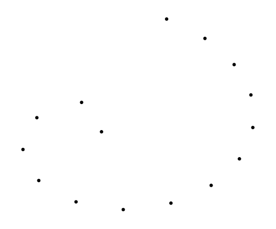
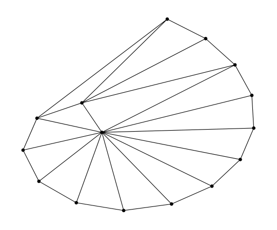
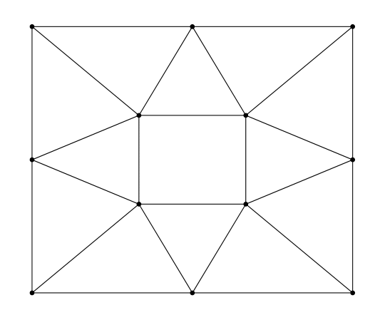
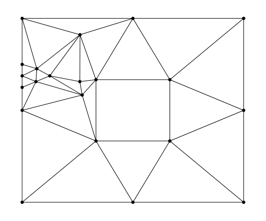

Examples
Let's say we want a Delaunay triangulation of the following spiral.

To do that, we create a file with .node extension (for eample spiral.node), that represents the spiral. We can now compute a Delaunay triangulation of the spiral and generate it's graph.
using CTriangle
t = triangulate("spiral.node")
outputGraph(t, "/home/martin/spiral")The function outputGraph will generate .tex file with the triangulation triangulation.tex and two .dat files nodes.dat, elements.dat. Run the following command form command line if you want to see the graph. It will store a "triangulation.pdf" in the current working directory.
pdflatex /home/martin/spiral/triangulation.texThe graph from the example above:

Next example shows how we can refine an existing mesh. Let's say we have the mesh stored in box.node and ele.node. The following image shows the mesh.

Now imagine that we want one particular triangle to have area not bigger than 0.2. For this we create box.area file. Now it can be refined in CTriangle:
using CTriangle
t = triangulate("box", "ra")
outputGraph(t, "/home/martin/example2")Note that we dont have to specify file extension. CTriangle knows which files to read from the command line switches. The refined mesh is shown on the image below.
